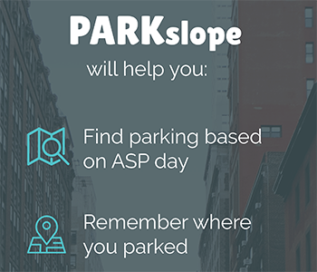

Hi! I'm Caitlin.
Former Interactive Project Manager turned UX Researcher, I'm passionate about technology that makes a difference - both on the web, and in the real world. I like to live at the intersection of insatiable human curiousity, stellar design, and exciting product innovation. I'm an expert in unconvering customer behavior, tackling thorny UX questions, and integrating design, development, and stakeholder teams.
My.Future
Project Management, User Research

PARKslope
UX/UI Design, Prototyping
Data Driven Detroit
Contextual Inquiry

Let's Move! Child Care
Project Management, User Research. Information Architecture